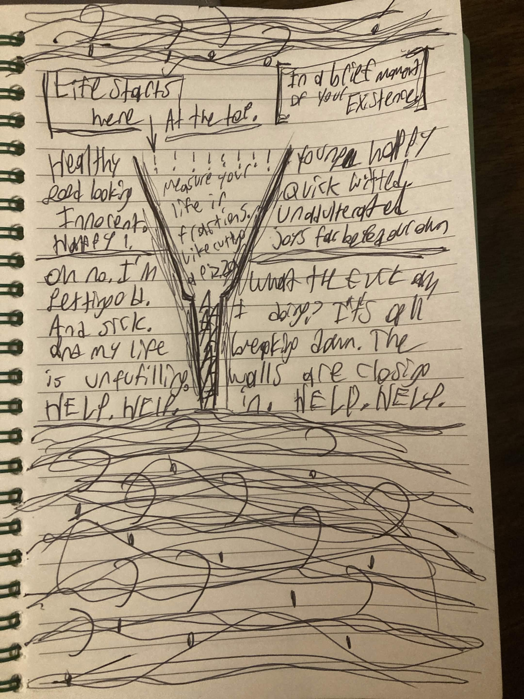
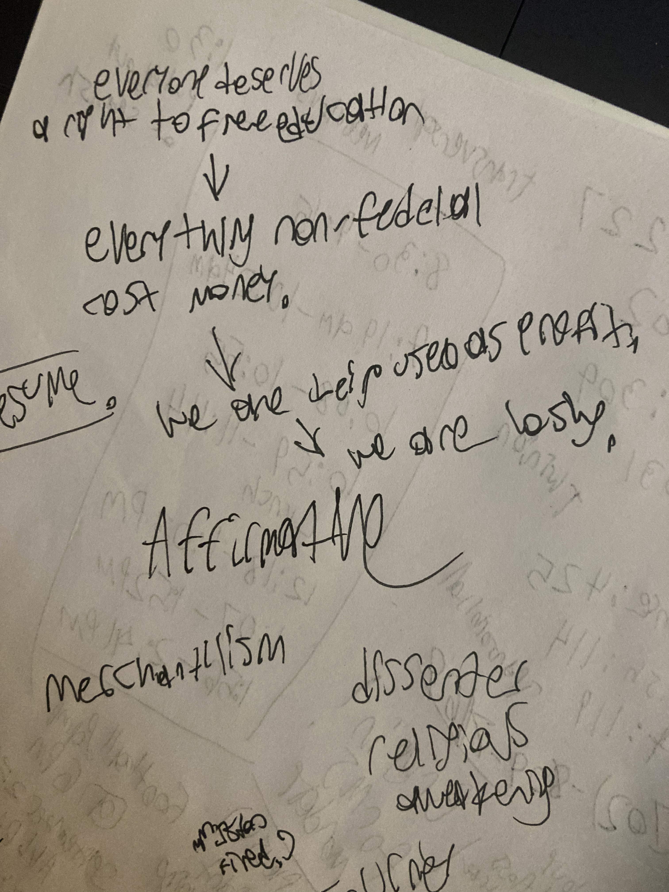
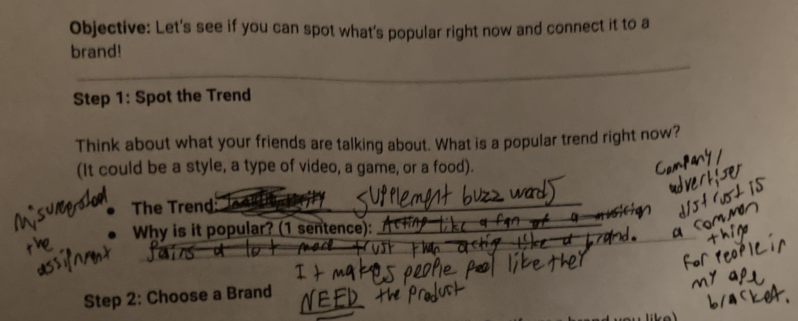
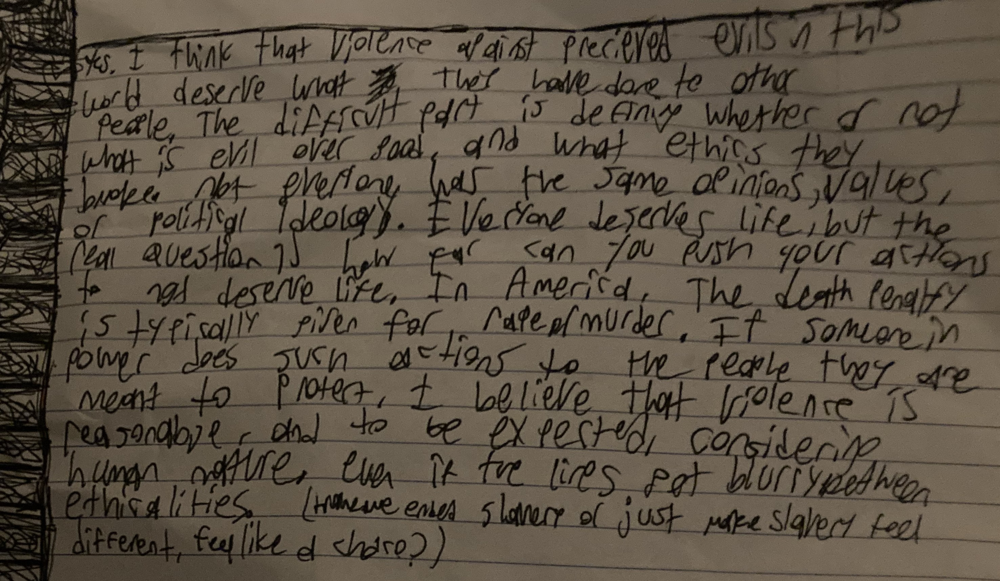

DIVINE INTELLIGENCE (or a reason i attend therapy every week)
all done in my beautiful style.

(i think this image explains itself.)
life is a funnel. it starts out great, and then your outlook gets more and more narrow.
until you realize there is no floor and you dive into your own demise.
it gets closer and closer and it traps you.
like being vaccum sealed in plastic. and you can wriggle around but it's not gonna fucking work.
you'll gain health difficulties. and handicaps. and fall apart.
we all fall apart.
we're falling both
we're both in a freefall
and im terrified of the bottom.
i can't imagine a world without the world.
there's not a part two. this is my only chance. and im fucking it up around every corner.
but i know i'm fucking it up, but i can't conform no matter how i try.
an excerpt to go read that describes this. from the spongebob journal incident.
alright. i just heard the term "anti science climatists" on some tv and it sparked a thought in me.
science inherently does not exist. only physical observation, but then again, observation is only what you percieve from your brain's processing.
and we can take these thoughts, and turn them into something bigger than ourselves, which would be ideas.
but ultimately, it's a collective of perspectives all shifted into ones, and opinions. facts can be observed in many ways.
if you go outside, i might comment on how blue the sky is, and you might comment how cold it is.
we bring these collectively together, and we're both outside, but our heads are in two different places.
we can come to a general conciseness, but we still view it differently.
meaning, nothing made outside of ourselves is inherently factual or dis-factual, and we can only rely on what we as people see.
but us as people do not see the greater picture and we only see our picture.
therefore, nothing factual or scientific is true, yet it is still useful to have inherently as humans, who seek knowlege and answers.
we all think, learn, and process differently, which is why there are different methods to equations.
yet, there is no methods to physics. if we drop something, it lands on the ground. not all people process the speed the same though, so some may say it falls quickly and some may say it falls slowly.
everything scientific or mathmatical is a general concencous to what us people have came together to gather as knowledge. and it all stems from a higher thinking than "us".
"us", or "we", only see the physical aspect. the truth. the actuality. but, our perceptions shift with these higher viewpoints of reality.
inheriently, nothing is real, factual, or sound unless we ourselves see it. and if it's scientific or mathmatical, we are being forced into scientific boxes.
35c to me is a good day. 35c to you is sweltering. but we can measure the same experience using units, but it affects everyone differently.
that's what's wrong when we bring people together in big groups (such as society). we were meant to be matriarchial and tribal creatures i believe, and we were never meant globalized. this does not mean it's bad, it just means the average neurodivergent or neuro-unique is not going to fit in a hardcoded and rigid environment, such as what has been forced onto us with society.
in conclusion, nothing is real. but is, because it's happening around us. especially with climate change. but it's fun to think of a society without generalizations and without globalism. and thought experiments are very fun to think about.
humans are inherently survivalists, but not nessecarilty selfish
we needed to work together. as a team. to survive
when did power come into play?
a baby will never want to grow up, get a job, have kids, and die alone.
that's conditioning.
nobody is anything. just the survival until they're told things.
everything is human that we're corrupting and turning unhuman.
and this late-stage capitalism is the result of such an experiment.
it's why people kill themselves. they feel unworthy and as if they were kicked out of the tribe. en mass.
but there is no tribe inherently if you're being banded with neurotypicals.
the vast majority against the minority.
nobody wins in our society ever.
we will never run out our own mortality.
ill die one day, you'll die one day, and what's the fucking point?
but there is a point. but there isn't.
and everything is all fucked at once, but okay.
you're okay. i'm okay. but it doesn't feel okay. but it is okay. and it is real. but it's not fucking real.
and it's all just pointless with a point.
and there's more to learn, and experience, it's just all trying to drag me down to the depths of hell.
and im burning and rolling around, hoping my next breath will be my last. but not really. cause you exist. and beautiful things exist.
in my body, there is my monolouge, and then my (heart/soul?)
and they don't like eachother very much.
i think i exclusively feel emotions in my body.
in my body, when there's a minor change in my plans it's like there is a million different colors. and they're all really bright. and they're all trying to mix into one, but they jsut cant
and no matter how hard i try to just make them one fucking color, they never mix together.
and everyone else is solid. and im the entire light spectrum. all at once.
and all the beams are reflecting off my innars.
innards.
and it's very uncomfortable.
that's the best way i'd describe it.
List of links that it think are enlightening:
https://jacobsm.com/
(found this guy trying to pirate radiohead music off of open
directories)
https://jacobsm.com/deoxy/deoxy.org/
(genuine divine intelligence far beyond my understanding)
https://jacobsm.com/baird/
(probably all true)
https://www.highmajik.org.uk/alchemy.htm
https://jacobsm.com/projfree/
(incredible. Please read this, if you don’t listen to anything
else)
http://archive.radiohead.com/Site4/tt006.html
(the entire radiohead archive is INCREDIBLE)
http://archive.radiohead.com/2000/syn011.html
if you ever want to go find stuff, search "index of"
"(whatever you want)" in google. You’ll go down rabbit
holes. Best way to find everything.
Interesting for stuff other than divine intelligence:
https://well-adjusted.de/~jrspieker/radiohead/bootlegs/
http://vwnettet.dk/bb-media/thumbs/3/6/72263/
svampebob on a weird website.
http://audio.turntablelab.com/realfiles/
(mp3 files)
https://www.animoticons.com/
beautiful.




